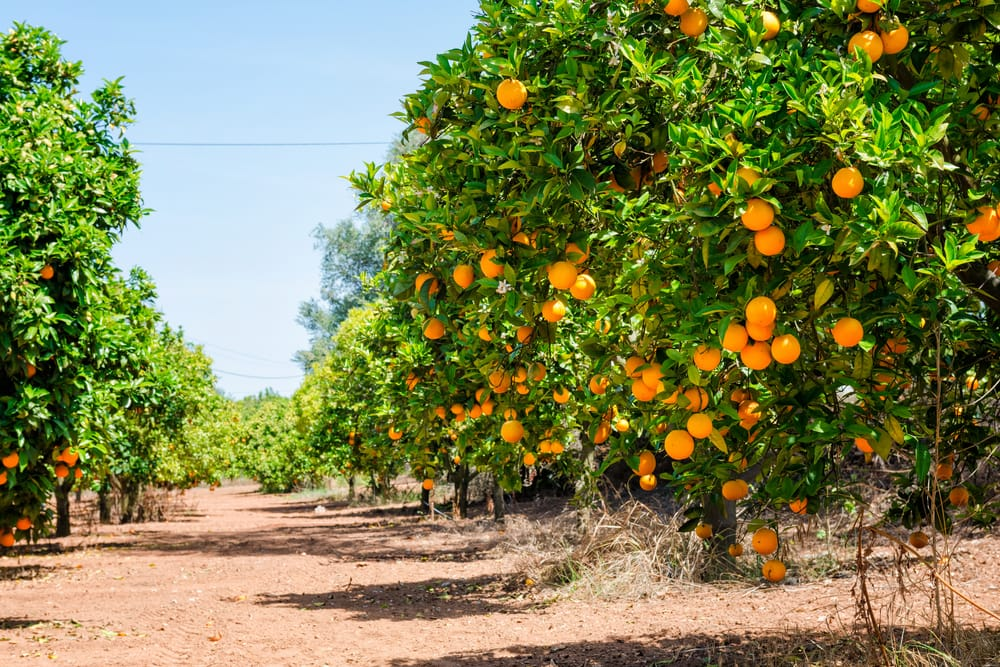

Sardegna
LA SARDEGNA
I MARI
La Sardegna è un'isola bagnata da quattro mari: a ovest il Mar di Sardegna, a est il Mar Tirreno, a sud il Canal di Sardegna e a nord le Bocche di Bonifacio.
torna indietro
LE COSTE
La Sardegna è circondata da 1800 km di coste: a est sono rocciose, mentre, a nord, sud e ovest sono sabbiose.
torna indietro
torna indietro
LE PIANURE
In Sardegna sono presenti 2 pianure principali: La Nurra (da Alghero, nella costa ovest, al Golfo dell'Asinara) e il Campidano (da Cagliari a Oristano).
 torna indietro
torna indietro
LA DEMOGRAFIA
Negli ultimi anni, in Sardegna, il saldo migratorio è stato positivo e ha portato a una crescita degli abitanti, nonostante il saldo naturale negativo. Questa frase significa che, negli ultimi anni, ci sono stati più immigrati che emigrati in Sardegna, nonostante ci siano state più morti che nascite.
torna indietro
LE CITTÀ
CARBONIA
Carbonia si trova nella zona del Sulcis, a sud-ovest della Sardegna. È stata costruita nel 1920-1930. Questa città è famosa per le miniere di carbone, ormai esaurite.
torna indietro
IGLESIAS
La città di Iglesias è importante per le sue chiese medievali e per le miniere di argento, purtroppo esaurite.
torna indietro
ORISTANO
Oristano è nata perchè gli abitanti di Tharros donvevano fuggire dai pirati arabi. Hanno scelto questa posizione anche perchè, era protetta dalle paludi, ora bonificate.
torna indietro
SASSARI
Sassari è il più grande centro del nord ed è una città di origine medievale. È alleata con Pisa e Genova, le due città marinare.
torna indietro
TEMPIO PAUSANIA
Tempio Pausania è famosa per la lavorazione del sughero e per le cave di granito, una roccia molto dura.
 torna indietro
torna indietro
OLBIA
Olbia è la città più importante della Costa Smeralda. Infatti, in questa zona turistica della Sardegna sono presenti molti traghetti e aereoporti.
 torna indietro
torna indietro
NUORO
Nuoro è una delle città meno popolate d'Italia. Questa città è diventata capoluogo di provincia dal 1927. Il suo territorio è montuoso ed è anche iportante per il turismo, l'economia e il commercio.
torna indietro
TORTOLÌ
Tortolì si trova su una pianura alluvionale, quindi costruita da un fiume. È famosa per il turismo balneare, ed è molto sviluppata la pesca negli stagni.
torna indietro
LANUSEI
Lanusei, come Nuoro, è una delle città meno popolate d'Italia. Questa città si trova su uno sperone di roccia alto circa 600 metri.
torna indietro
SANLURI
La città di Sanluri si trova sulla pianura del Campidano. Quando, in epoca medioevale, la Sardegna era divisa in due parti, Sanluri si trovava in mezzo, di confine. In questa città, ci sono ancora oggi dei resti del castello in pietra di avvistamento.
torna indietro
VILLACIDRO
L'attività principale della città di Villacidro è la coltivazione degli agrumi.

torna indietro
CAGLIARI
Cagliari è il capoluogo di regione della Sardegna, e per questo sono presenti molti traghetti e aereoporti. È stata fondata dai Fenici, ed è il principale posto di passaggio della pianura del Campidano.
.jpg) torna indietro
torna indietro